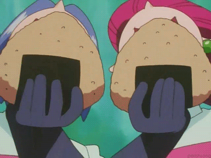

onigiri
-

-

description
onigiri itself is a staple food in japan. simple, portable, and filling
making it perfect to take on long adventures to duel gym leaders and team
rocket.
ingredients
- rice
- salt
- nori
- furikake
- peas
- soy sauce
steps to make
-
once the rice is cooked and cooled down, all you have to do is shape
them. i have a difficult time with this, so what i’ve learned to do is
use some plastic wrap. put a scoop of rice in the middle of the plastic
wrap and wrap it up.
-
now, the shaping. hold the wrapped up rice in your hand. cup your hand
so it looks like a “U”, and then cup your other hand, perpendicularly,
on top of it tightly. gently squeeze the rice. if you’re doing it
correctly, it should start to look kind of like a triangle. then, rotate
the rice ball in your hands, so a different point is pointing downward
and repeat.
-
take the rice out of the plastic wrap and form it a few times with your
bare hands. Then place it on a plate, and sprinkle some salt on them.